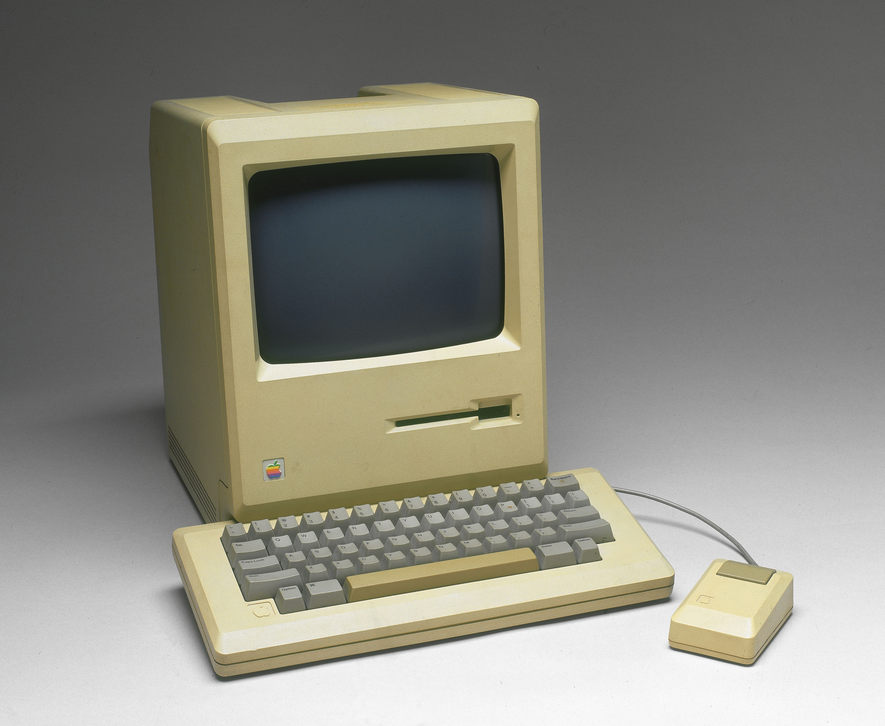
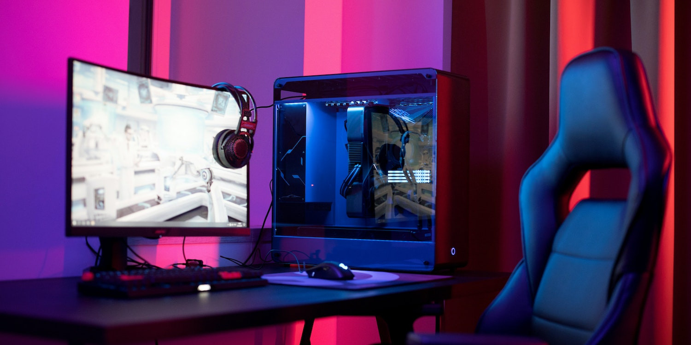

Strona jest poświęcona wyłącznie komputerom
|

Pierwszy komputer osobisty z serii Macintosh, stworzonej przez Apple. Zaraz po premierze kosztował 2495 dolarów (około 5555 dolarów w 2012 roku). Tak jak wszystkie klasyczne Macintoshe miał wbudowany mikroprocesor MC68000 przedsiębiorstwa Motorola. Produkowano go tylko w beżowej obudowie. Jego następca, Macintosh 512K, został wprowadzony we wrześniu 1984 roku. 128K posiadał bardzo ostry, 9-calowy, 1-bitowy monitor CRT o rozdzielczości 512 × 342 pikseli, zaprojektowany tak, by można było na nim otrzymywać efekty graficzne takie, jak na ówczesnym sprzęcie za 10 000 dolarów. Ustanowił standard DTP na 72 ppi. Poza tym miał wbudowaną stację dyskietek 3,5 cala oraz wcięcia na górze umożliwiające bezproblemowe podniesienie komputera i przeniesienie go w inne miejsce. Za największą wadę konstrukcji uważa się brak wentylatora, który został wprowadzony dopiero w modelu Macintosh SE w 1987. 128K był przez to bardzo cichy, ale szybko się nagrzewał, co prowadziło do częstego przegrzewania się komponentów, których wymiana była dosyć kosztowna. Duży sukces odniosły więc poradniki pomagające w samodzielnej naprawie Maca, np. The Dead Mac Scrolls i Macintosh Repair & Upgrade Secrets. Prowadziło to do tego, że był nazywany „beżowym tosterem”. |
Komputer stacjonarny, potocznie desktop (ang. desktop; na biurko) – rodzaj komputera osobistego, który zwykle jest na stałe umiejscowiony przy biurku, głównie ze względu na swoje gabaryty i ciężar. Składa się z co najmniej trzech zasadniczych elementów: jednostki systemowej, monitora i klawiatury. Niegdyś istniał podział na komputery biurowe i domowe, w którym domowe miały zazwyczaj mniejszą moc obliczeniową, ale za to więcej możliwości multimedialnych. Obecnie jednak ten podział zanikł, gdyż multimedialność jest już standardem w komputerach PC, a gry komputerowe – czyli jedno z popularnych zastosowań komputerów domowych – często wymagają dla wykorzystania pełni ich możliwości naprawdę mocnych maszyn, podczas gdy do typowych prac biurowych wystarczają znacznie tańsze zestawy w podstawowej konfiguracji. W związku z rozwojem technologicznym oraz przekraczaniem kolejnych barier miniaturyzacji wielu układów scalonych czy innych podzespołów elektronicznych, a przede wszystkim w związku z upowszechnieniem się nowoczesnych technologii, a co za tym idzie przeniesieniem produkcji do Azji, spadły ceny komputerów przenośnych (laptopów), a ich liczba w stosunku do komputerów stacjonarnych ciągle rośnie. |

Komputer do gier, to wyspecjalizowany komputer osobisty przeznaczony do grania w gry wideo o wysokich standardach. Komputery do gier zazwyczaj różnią się od popularnych komputerów osobistych tym, że wykorzystują wysokowydajne karty graficzne, procesor o dużej liczbie rdzeni i surową wydajność oraz wydajniejszą pamięć RAM. Komputery do gier są również używane do innych wymagających zadań, takich jak edycja wideo. Gracze i entuzjaści komputerów mogą zdecydować się na podkręcenie swoich procesorów i procesorów graficznych, aby uzyskać dodatkową wydajność. Dodatkowy pobór mocy potrzebny do przetaktowania dowolnego procesora często wymaga dodatkowego chłodzenia, zwykle poprzez chłodzenie powietrzem lub chłodzenie wodą. Do 2021 r. sprzedano ogółem 65,1 mln produktów do gier, z czego 27,9 mln to notebooki do gier, 19,7 mln to monitory do gier, a 17,5 mln to komputery stacjonarne do gier. |
Zapraszamy do kontaktu przez formularz